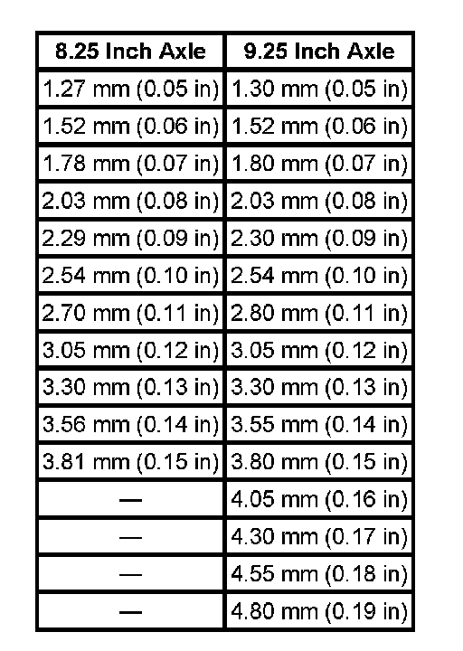
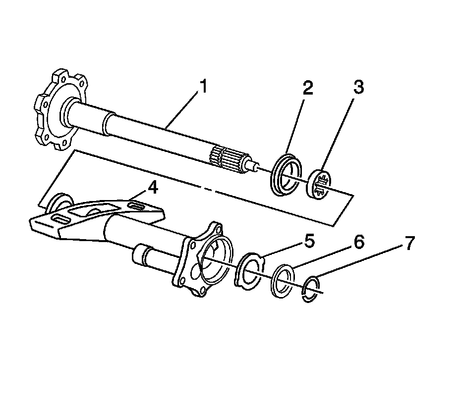
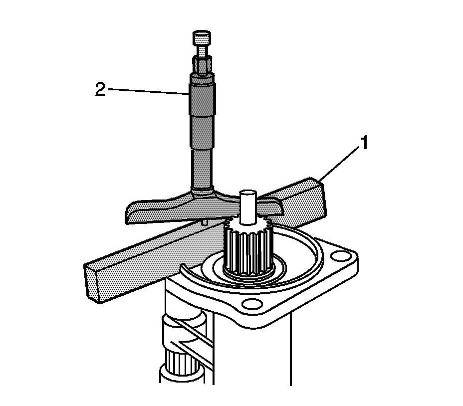
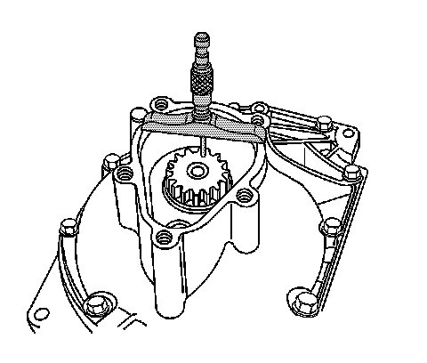
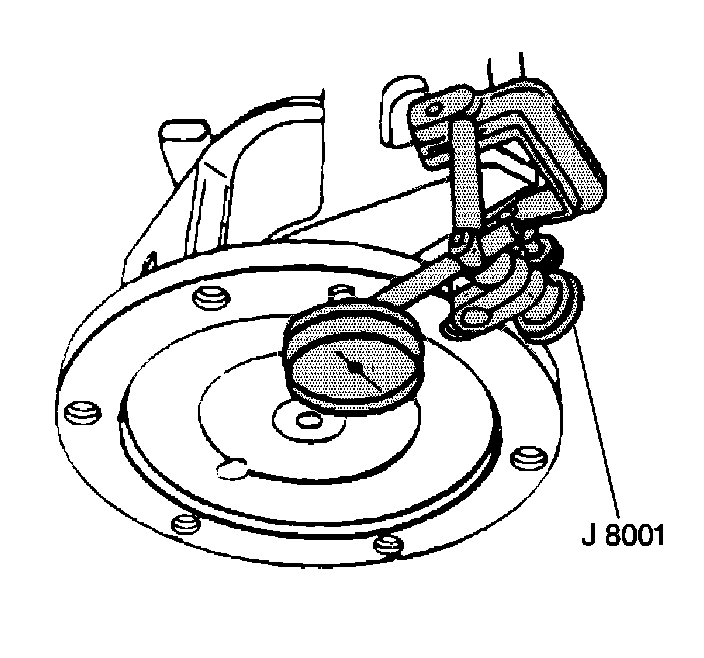

Differential Output Shaft Bearing: Adjustments
Inner Axle Shaft Shim Adjustment
Tools Required
^ J 34672 Depth Micrometer
^ J 34673 Flat Gage Bar
^ J 8001 Dial Indicator Set
The front drive axle clutch gear shim needs to be measured and adjusted if any of the following parts are replaced:
^ The inner axle shaft
^ The inner axle shaft housing
^ The clutch shaft
^ The differential carrier case
^ The ring and pinion gears
^ The differential assembly
^ The differential bearings
^ The carrier connector
Front drive axle clutch shims are available in the following sizes:

1. Install the inner axle bearing and the inner axle seal, if necessary.

2. Install the following components into the inner axle shaft housing:
1. Install the inner axle shaft (1) into the inner axle shaft housing (4).
2. Install the thrust washer (with tabs) (5).
Ensure the tabs on the thrust washer are aligned with the slots in the inner shaft housing.
3. Install the thrust washer (without tabs) (6).
4. Install the retaining ring (7) into the inner axle shaft (1).
3. Install the inner axle shaft housing into a vise. Clamp only on the mounting flange of the inner axle shaft housing.
Important: In order to obtain an accurate measurement, the inner axle shaft must be moved outwards before measuring.
4. Push on the inner end of the inner axle shaft and move the shaft outboard as far as it will go.

5. Install the J 34673 (1) and the J 34672 (2) onto the inner shaft housing as shown.
6. Using the J 34672, measure the distance from the edge of the inner axle shaft to the surface of the J 34673. Ensure the base of the J 34672 is flat against the inner axle shaft.

7. Using the J 34672, measure the distance from the machined surface of the differential carrier housing to the outer surface of the front drive axle clutch shaft.
8. Subtract the measurement obtained in step 6 from the measurement obtained in step 7.
This measurement is the distance between the inner axle shaft and the clutch shaft before subtracting the J 34673.
9. Using a micrometer, measure the thickness of the J 34673.
10. Subtract the thickness of the J 34673, measured in step 9, from the measurement determined in step 8.
This is the shim thickness for the front axle without having any axle shaft endplay.
11. The correct shim size will be one size smaller than the figure obtained in the previous step.
Note the following examples:
^ If the figure obtained in step 8 was 3.53 mm (0.139 in), use a 3.30 mm (0.130 in) shim.
^ If the figure obtained in step 8 was 3.30 mm (0.130 in), use a 3.05 mm (0.120 in) shim.
Alternate Adjustment Method
Important: Use this method only if the proper tools for calculating the shim size are unavailable.
1. Install the original shim to the shaft.
Use the chassis grease in order to hold the shim in place.
2. Install the inner axle housing assembly to the differential carrier case.
Do not use sealer at this time.
Notice: Refer to Fastener Notice.
3. Install the bolts.
Tighten the bolts to 40 N.m (30 lb ft).

4. Measure the shaft end play using the following procedure:
1. Install the J 8001 or the equivalent on the axle tube end.
The plunger of the indicator must be at a right angle to the axle flange.
2. Move the shaft back and forth and read the end play.
The correct end play is 0.03-0.51 mm (0.001-0.020 in).
3. If the end play is incorrect, install a thicker or thinner shim as needed in order to bring the end play into the specified range.